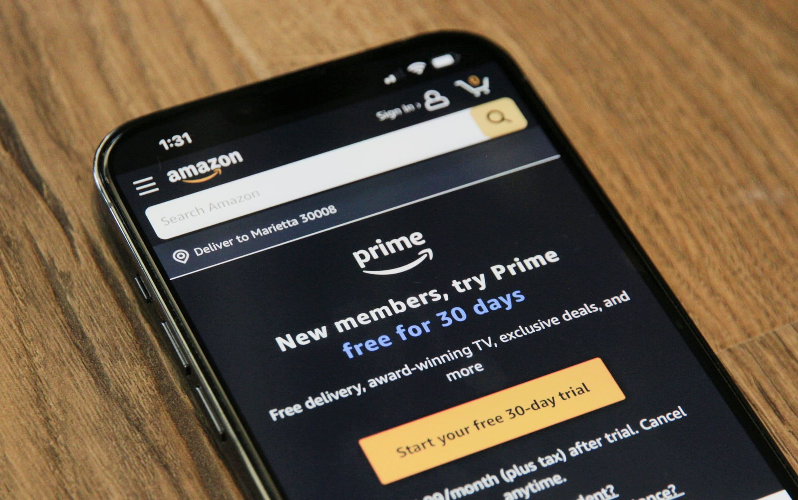

Best Ways to Save Money on Subscriptions in 2026
The best ways to cut subscription costs in 2026: find hidden charges, negotiate, and the tools that cancel forgotten subscriptions for you.
Z Zar · 23 Apr 2026 — 5 min read

📚 Part of our Budget & Debt Guide
The average American pays for 12 subscriptions per month but actively uses only 7. The remaining 5 — averaging $15-20 each — represent $75-100/month in pure waste.
Subscription costs have become one of the fastest-growing household expense categories. Streaming services, apps, software, meal kits, boxes, and digital tools have quietly accumulated into a significant monthly bill that most people have never audited.
Here is how to find every subscription you are paying for and cut the ones you do not need.
Step 1: Find Every Subscription You Are Paying For
The first step is discovery — and most people are surprised by what they find.
The best tools for finding subscriptions:
Rocket Money — The most powerful subscription finder available. Connect your bank accounts and credit cards and Rocket Money automatically identifies every recurring charge. It categorizes them, shows you the annual cost of each, and allows you to cancel directly through the app with one tap. Free tier is sufficient for the audit.
Trim — Similar functionality to Rocket Money. Identifies subscriptions and negotiates bills on your behalf.
Your bank or credit card app — Most major banks now have subscription tracking built into their apps. Chase, Bank of America, and Capital One all offer some version of this feature.
Manual method: Download your last three months of bank and credit card statements. Highlight every recurring charge. This takes 30-60 minutes but catches everything including charges that auto-detection misses.
Step 2: Categorize and Evaluate Each Subscription
For every subscription you find, answer three questions:
1. Did I know I was paying for this? If no — cancel immediately. There is no scenario where a subscription you did not know you had is worth keeping.
The Most Common Forgotten Subscriptions
Free trials that converted to paid: Every free trial with a credit card requirement eventually converts. Most people forget to cancel. Common culprits: streaming services, software tools, news sites, fitness apps.
Annual subscriptions: Charged once per year, they feel invisible for 11 months then appear as a large unexpected charge. Common culprits: Amazon Prime, antivirus software, cloud storage, professional tools.
Graduated pricing: A service that was $5/month when you signed up three years ago may now be $15/month. Many services increase prices for existing customers while advertising lower rates for new ones.
Defunct accounts: Services you signed up for during a specific life phase — a dating app, a fitness challenge, a learning platform — and have long since moved on from.
The Subscription Audit Strategy
Keep these without question:
- Subscriptions you use multiple times per week
- Subscriptions that save you more money than they cost (Costco membership, for example)
- Subscriptions essential for work or income
Cancel immediately:
The Book That Changes How You Spend
I Will Teach You to Be Rich
by Ramit Sethi
Contains a complete framework for auditing your recurring expenses and automating the savings that result.
2. Have I used this in the last 30 days? If no — strong candidate for cancellation. A subscription unused for 30 days is almost certainly unused for longer.
3. Would I sign up for this today at this price if it did not already exist? If no — cancel. The pain of cancellation is the main reason people keep subscriptions they do not value. Recognizing this makes cancellation easier.
- Anything you did not know you were paying for
- Anything unused in 30+ days
- Duplicate services (three streaming services covering the same content)
- Services you have been meaning to cancel for months
Evaluate carefully:
- Services used occasionally but not frequently
- Subscriptions you value but could live without
How to Cut Streaming Costs Without Losing Content
Streaming subscriptions are among the most common and most duplicated. Here are strategies to reduce costs without eliminating entertainment.
Rotate rather than stack: Subscribe to one or two services at a time. Watch what you want. Cancel. Subscribe to the next. Most content is available on multiple platforms over time.
Downgrade tiers: Most streaming services offer ad-supported tiers at 40-60% lower price. If you can tolerate occasional ads, the savings are significant.
Share plans: Many streaming services allow family plans with multiple profiles. Sharing with family members who pay their portion reduces individual cost.
Annual billing: Switching from monthly to annual billing typically saves 15-20%. Only do this for services you are certain you will use for 12 months.
Negotiating Subscription Prices
Many subscription companies will offer discounts rather than lose a customer. This works most reliably with:
- Cable and internet providers
- Cell phone carriers
- Gym memberships
- Insurance
- Some software subscriptions
The script: Call customer service and say: "I am thinking about cancelling my subscription because the price is higher than I can justify. Is there anything you can do on the price?"
Many companies have retention offers — discounted rates for 3-6 months — that they only reveal when a customer explicitly threatens to cancel.
The Subscription Tracking System
After the audit, prevent subscription creep from returning.
Never use your primary debit card for free trials. Use a credit card you check monthly, or use a virtual card number that you can instantly disable after the trial.
Set a calendar reminder for every free trial. When you start a free trial, immediately set a phone reminder for two days before it converts to paid.
Monthly subscription review: On the first of each month, spend five minutes reviewing your subscription list. Add this to your monthly financial review routine.
The Annual Savings From a Full Subscription Audit
Based on average user data from subscription tracking services:
| Category | Average monthly waste |
|---|---|
| Forgotten streaming | $25 |
| Unused apps | $18 |
| Old software | $22 |
| Expired free trials | $15 |
| Unused fitness/wellness | $30 |
| Total | $110/month |
$110/month saved is $1,320/year. Invested at 7% annual return over 10 years, that becomes $18,000.
From a one-time 60-minute audit.
The Bottom Line
Download Rocket Money today. Connect your accounts. Let it find every subscription you are paying for.
Then spend 30 minutes cancelling everything you do not actively use and genuinely value.
The average person finds $100-150/month in subscription waste on their first audit. That money can go directly to savings or investments — permanently, from a single afternoon of attention.
Want to go deeper on this? See What Is the Debt Snowball Method and Does It Work?.
Want to go deeper on this? See The 50/30/20 Budget Rule Explained (And How to Make It Work for You).
For the full breakdown, read Best High-Yield Savings Accounts in 2026 (Earn 10x More on Your Money).
Want to go deeper on this? See Best Apps to Save Money Automatically in 2026.
📥 Free download: The 10-Step Financial Independence Checklist
The exact roadmap I followed to build my financial foundation. 11 pages, professionally designed, free with email signup — no credit card, unsubscribe anytime.
Disclosure: This post may contain affiliate links. ZarWealth may earn a commission if you sign up through our links, at no extra cost to you.